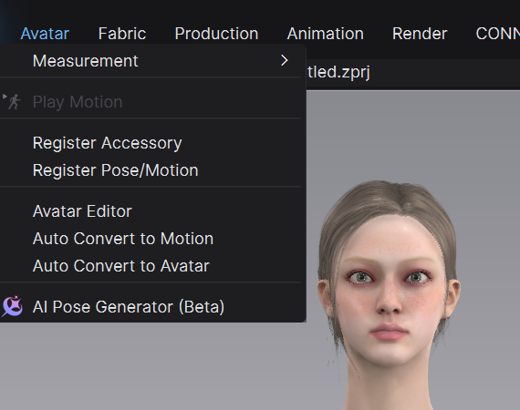
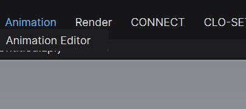

CLO 기능 학습 (2): Mixamo 모션과 Animation Editor
2026.09.15지난주 AI Pose에서 만든 정지 포즈를 움직임으로 확장합니다. Mixamo 가입과 화면 구성, CLO용 FBX 다운로드 설정, MTN 변환·저장, Animation Editor의 재생·기록 제어와 관통·붕괴 방지 순서를 실습합니다.
지난주에는 Image to Pose로 한 장의 이미지에서 정지 포즈를 만들었습니다. 이번 주에는 그 다음 단계로, 이미 만들어진 모션을 CLO 아바타에 적용하고 움직이는 동안 의상이 자연스럽게 따라가도록 기록합니다. 오늘의 핵심은 ‘멋진 모션을 많이 찾는 것’이 아닙니다. ① 의상을 잘 보여주는 모션 하나를 고르고, ② FBX를 CLO용 MTN으로 변환하고, ③ Animation Editor에서 필요한 구간만 재생·기록하며, ④ 관통이나 붕괴가 생긴 원인을 찾아 안정화하는 것이 목표입니다.
오늘 만들 파일
수업이 끝나기 전 아래 세 파일을 정리합니다. ① W03_이름_mixamo-original.fbx — Mixamo에서 받은 원본 모션 ② W03_이름_motion01.mtn — CLO 아바타에서 재사용할 모션 파일 ③ W03_이름_motion-test.zprj — 의상을 입히고 모션 시뮬레이션을 기록한 프로젝트 원본 FBX와 변환한 MTN을 따로 보관해야 나중에 다른 의상이나 프로젝트에서도 같은 모션을 다시 사용할 수 있습니다.
1. CLO 포즈와 모션의 차이
POS는 특정 한 프레임의 자세를 저장하는 정지 포즈 파일이고, MTN은 시간에 따라 변하는 아바타 관절 움직임을 저장하는 CLO 모션 파일입니다. 지난주 결과물이 POS였다면 이번 주 결과물은 MTN입니다. CLO 모션은 File > Open > Joint Motion에서 불러오고 Avatar > Play Motion으로 간단히 재생할 수 있습니다. 의상이 실제로 움직이는 결과를 만들 때는 Animation Editor에서 아바타 모션을 따라가는 의상 시뮬레이션을 Record로 기록해야 합니다. 아바타 모션을 재생한 것과 의상 애니메이션을 기록한 것은 서로 다른 단계입니다.
2. Mixamo 소개와 가입
Mixamo는 Adobe가 제공하는 웹 기반 캐릭터 자동 리깅·모션 라이브러리입니다. 걷기, 달리기, 회전, 대기 자세처럼 이미 제작된 모션을 캐릭터에 적용하고 FBX로 받을 수 있습니다. 직접 모션을 키프레임으로 만드는 도구라기보다, 필요한 움직임을 찾고 미리 조정해 가져오는 라이브러리에 가깝습니다. 별도의 유료 Creative Cloud 구독은 필요하지 않지만 Adobe ID로 로그인해야 합니다. ① mixamo.com에 접속, ② LOG IN을 선택, ③ 기존 Adobe 계정으로 로그인하거나 Create an account에서 무료 Adobe ID 생성, ④ 로그인 후 Animations 탭으로 이동합니다. 학교·기업용 Enterprise/Federated ID에서는 Mixamo가 열리지 않을 수 있으므로 개인 Adobe ID를 사용합니다.
Adobe Mixamo 열기↗3. Mixamo 화면에서 볼 것
상단의 Characters는 캐릭터 선택, Animations는 모션 검색 화면입니다. 왼쪽 목록에서 모션을 찾고, 가운데 Preview에서 선택한 캐릭터의 움직임을 확인하며, 오른쪽 설정 패널에서 모션을 조절한 뒤 DOWNLOAD를 누릅니다. 아래 재생 바에서는 전체 길이와 현재 프레임을 확인할 수 있습니다. 검색어는 Catwalk Walk, Catwalk Walk Forward, Walking처럼 짧게 입력합니다. 수업 첫 모션은 회전·점프·킥이 없는 직선 걷기를 고릅니다. 여러 동작이 섞인 긴 Catwalk Sequence보다 짧은 Walk Forward가 의상 문제의 원인을 찾기 쉽습니다. • Overdrive: 모션 속도입니다. 너무 빠르면 치맛단·소매 관통이 늘어납니다. • Character Arm-Space: 팔과 몸 사이 간격입니다. 소매가 몸통을 뚫으면 먼저 조금 넓혀 봅니다. • Trim: 필요한 시작·끝 구간만 남깁니다. • Mirror: 좌우 동작을 반전합니다. • In Place: 제자리에서 움직이게 합니다. 의상 테스트에는 편하지만 실제 런웨이 전진이 필요하면 끕니다. 모션에 따라 표시되지 않을 수 있습니다.
4. CLO용 Mixamo 다운로드 옵션
Format FBX Binary (.fbx)
Skin With Skin
Frames per Second 30
Keyframe Reduction None이번 수업에서는 위 네 항목을 공통 설정으로 사용합니다. FBX Binary는 CLO에서 읽을 수 있는 일반 FBX 형식이고, 30 FPS는 CLO 모션 제작 권장 기준과 맞습니다. Keyframe Reduction을 None으로 두면 변환 전에 키가 줄어들어 손발이 미끄러지는 변수를 피할 수 있습니다. Skin은 이번 수업에서 With Skin으로 고정합니다. 파일 크기는 커지지만 캐릭터 메쉬·스켈레톤·모션이 한 파일에 함께 들어 있어 CLO의 Auto Convert to Motion에서 확인하기 쉽습니다. Without Skin은 이미 동일한 스켈레톤을 따로 관리하는 파이프라인에서 쓰는 애니메이션 전용 옵션이므로 이번 실습에서는 사용하지 않습니다. 다운로드한 파일명은 즉시 영문으로 정리합니다.
5. FBX 모션을 CLO의 MTN으로 변환·저장

이번 수업의 기본 경로는 Avatar > Auto Convert to Motion입니다. 이 기능은 외부 FBX 모션을 CLO 기본 아바타에 호환되는 모션으로 변환합니다. ① Avatar > Auto Convert to Motion을 선택합니다. ② 사용할 CLO 아바타의 Gender를 선택합니다. ③ Motion File에서 Mixamo FBX를 엽니다. ④ Convert를 누릅니다. CLO가 Animation 화면으로 전환되면 Play로 발 위치, 진행 방향, 손과 몸의 간격을 확인합니다. ⑤ 문제가 없으면 Save를 눌러 W03_이름_motion01.mtn으로 저장합니다. ⑥ 의상 프로젝트를 다시 연 뒤 File > Open > Joint Motion에서 저장한 MTN을 적용합니다. 현재 자세와 첫 프레임이 다르면 Transition Animation을 만들고, 전진 모션이면 Move Avatar & Garment to Start Position을 사용합니다. ⑦ 마지막으로 ZPRJ도 새 이름으로 저장합니다. MTN은 움직임 자산, ZPRJ는 의상과 현재 작업 상태를 보관하는 파일입니다. CLO 2024.2 이후의 Avatar > Register Pose/Motion도 FBX에서 POS·MTN을 만들 수 있지만, 관절 이름과 호환 조건을 확인해야 합니다. 이번 수업에서는 경로를 섞지 않고 외부 모션 변환용 Auto Convert to Motion만 사용합니다.
6. Animation Editor 재생과 기록 제어

Animation > Animation Editor를 열고 아래 도구만 먼저 익힙니다. • Start / End: 재생 구간의 처음 또는 끝으로 이동합니다. • Play / Pause: 설정한 구간을 재생하거나 멈춥니다. • Repeat: 같은 구간을 반복 확인합니다. • Playback Speed: 1/4x, 1/2x, 1x, 2x, 4x, 8x로 확인 속도를 바꿉니다. 느린 재생은 문제 프레임을 찾는 용도이지 시뮬레이션 자체를 고치는 기능은 아닙니다. • Frame Stepping / Real Time: 모든 프레임을 차례대로 보거나 실제 시간 기준으로 재생합니다. 관통 검사에는 Frame Stepping이 유리합니다. • Start Frame / End Frame: 타임라인에서 실제로 재생·기록할 구간을 정합니다. • Scrub: 재생 헤드를 드래그해 원하는 프레임을 직접 확인합니다. • Record: 아바타 모션을 따라 움직이는 의상 시뮬레이션을 프레임으로 기록합니다. Record를 누르면 Simulation이 자동으로 켜집니다. 먼저 Play로 아바타 모션만 확인하고, 의상과 첫 프레임이 안정된 뒤 Record를 누릅니다. 기록 도중 멈추려면 Pause를 사용합니다. 트랙을 우클릭해 Delete하면 해당 애니메이션은 Undo로 복원되지 않으므로 삭제 전 ZPRJ를 저장합니다.
7. 관통·붕괴를 줄이는 작업 순서
의상이 터지거나 몸을 뚫는다고 곧바로 물성값을 전부 바꾸지 않습니다. 아래 순서대로 원인을 줄여 갑니다. ① 모션부터 단순하게: 처음에는 Walk Forward처럼 속도와 회전이 적은 모션을 선택합니다. 손이 치마나 소매를 통과하면 Mixamo의 Character Arm-Space를 조금 넓히고 다시 받습니다. ② 첫 프레임 안정화: Record 전에 Simulation을 켜고 의상이 아바타 위에서 완전히 안정되는지 확인합니다. 시작부터 겹친 패턴은 애니메이션이 진행될수록 더 크게 무너집니다. ③ 필요한 구간만 기록: Trim 또는 Start/End Frame으로 문제 없는 짧은 구간부터 테스트합니다. 긴 모션 전체를 한 번에 기록하지 않습니다. ④ Animation (Stable) 사용: 3D Toolbar의 Simulation 아이콘을 길게 눌러 CPU 또는 GPU의 Animation (Stable)을 선택합니다. 트림의 충돌과 무게가 중요한 의상은 CPU 시뮬레이션으로 최종 확인합니다. ⑤ 메쉬를 무조건 촘촘하게 만들지 않기: 겉으로 잘 보이는 외피는 Particle Distance 10mm를 기본 테스트값으로 두고, 세밀한 주름이 필요한 일부만 5~7mm로 낮춥니다. 보이지 않는 안쪽 레이어는 20mm로 높이거나 불필요하면 정리합니다. ⑥ 필요한 곳만 고정: 어깨나 옆선이 들뜨면 Avatar Tape 또는 Tack on Avatar, 겹친 장식은 Tack을 최소한으로 사용합니다. 핀과 택을 많이 쓰면 옷의 자연스러운 움직임도 사라집니다. ⑦ 마지막에 충돌값 확인: Skin Offset, Additional Thickness - Collision, Static/Kinetic Friction은 기본값에서 시작하고 필요한 항목 하나씩만 바꿉니다. 관통을 숨기려고 간격을 과하게 키우면 의상이 몸에서 떠 보입니다. 한 프레임에서 관통이 시작되면 그 뒤 프레임을 계속 기록하지 말고 Pause → 문제 프레임 확인 → 초기 드레이프 또는 모션 조정 → 다시 Record 순서로 돌아갑니다.
수업 실습: 한 개의 걷기 모션 완성
① Mixamo에서 Catwalk Walk Forward 또는 단순한 Walking 모션을 찾습니다. ② 팔과 몸, 다리와 치맛단 사이가 겹치지 않는지 Preview에서 확인합니다. ③ 필요한 구간을 Trim하고 FBX Binary / With Skin / 30 FPS / None으로 다운로드합니다. ④ CLO에서 Auto Convert to Motion으로 MTN을 만들고 저장합니다. ⑤ 의상 프로젝트에 MTN을 적용하고 짧은 구간을 Play합니다. ⑥ 첫 프레임을 안정화한 뒤 Animation (Stable)에서 Record합니다. ⑦ Repeat와 Frame Stepping으로 손·겨드랑이·가랑이·무릎·치맛단을 점검합니다. 걷기 모션 하나가 안정적으로 끝나면 그다음에 정지–걷기–회전처럼 더 긴 시퀀스로 확장합니다. 이번 주에는 여러 모션을 이어 붙이는 편집보다 한 모션의 의상 시뮬레이션 품질을 우선합니다.
제출 전 점검
□ Adobe ID로 Mixamo에 로그인했다. □ Animations 화면에서 Preview와 조정값을 확인했다. □ FBX Binary / With Skin / 30 FPS / None으로 다운로드했다. □ Auto Convert to Motion에서 성별을 맞추고 MTN으로 저장했다. □ MTN과 ZPRJ를 각각 저장했다. □ Animation Editor의 Start·Play/Pause·End·Repeat·속도·재생 구간을 사용할 수 있다. □ Record 전에 첫 프레임 의상이 안정돼 있다. □ 손·겨드랑이·무릎·치맛단의 관통과 갑작스러운 붕괴가 없다.